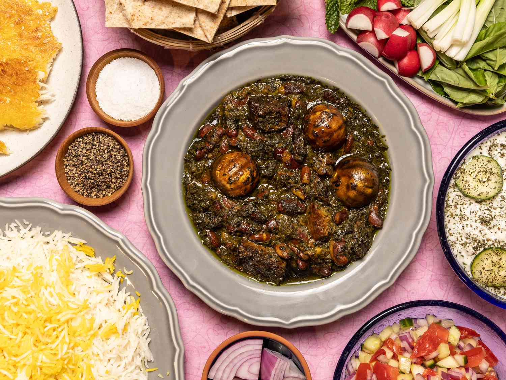

Ghormeh Sabzi (Persian Herb Stew)

Description
This fragrant, soul-warming herb stew is the crown jewel of Persian cuisine. Loaded with deep, earthy flavors from a bounty of fresh greens, it is traditionally enjoyed as a hearty main course served over fluffy basmati rice. A true taste of Persian home cooking!
Ingredients
- 4 cups water (or more as needed)
- 1/4 cup vegetable or canola oil
- 1/2 teaspoon black pepper
- 1 teaspoon ground turmeric
- 4 dried Persian limes (limoo amani), pierced with a fork
- 1 cup dried kidney beans, soaked overnight and drained
- 1/2 cup dried fenugreek leaves (or 2 cups fresh)
- 1 cup fresh scallions (or chives), finely chopped
- 4 cups fresh parsley, finely chopped
- 1 large yellow onion, finely diced
- 2 large lamb shanks (or 1.5 lbs beef chuck), cut into large pieces
Steps
- Heat the oil in a large Dutch oven over medium heat. Sauté the finely chopped parsley, cilantro, and scallions in the hot oil for 10-15 minutes, stirring frequently, until they are deeply fragrant and have darkened in color. Remove the herbs and set aside.
- In the same pot, sauté the diced onion until golden brown. Add the lamb pieces and turmeric, and cook until the meat is browned on all sides.
- Return the sautéed herbs to the pot. Add the drained kidney beans, pierced dried limes, salt, pepper, and enough water to cover everything. Bring to a boil, then reduce the heat to low, cover, and simmer for 2.5 to 3 hours, until the meat is tender and the stew has thickened.
- Taste and adjust the seasoning with additional salt and pepper if needed. Serve hot over steamed basmati rice.